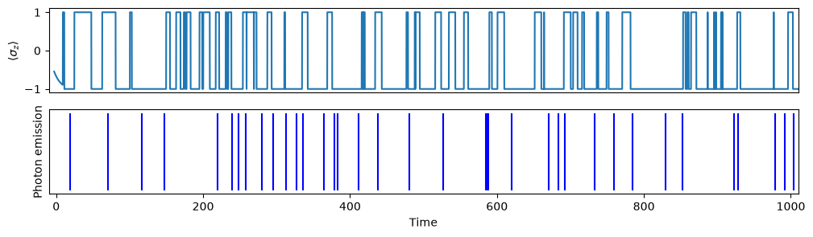
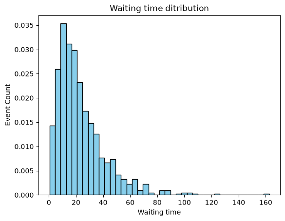
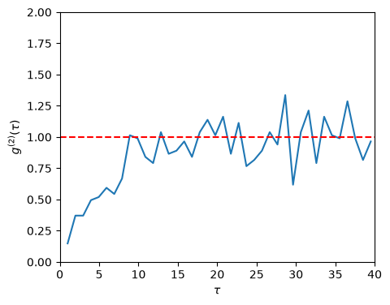

13.3. A Simple example of the jump method#
Let us calculate a quantum trajectory of thermal fluorescence from a single emitter using the same model as used in the example of quantum master equation. (See Chapter 12.2.)
13.3.1. Calculating jumps#
QuTiP has a built-in routine to calculate quantum trajectory. In order to understand the algorithm, we write our own code. It is too slow for real applications. Use QuTiP instead.
In the following code, the simulation continues until the photon counts reaches the maximum. It takes a while to complete the simulation if a large number of photons are specified. At each time step, \(\langle \sigma_z \rangle\) is computed and the time a photon is emitted is recorded. This code takes several minutes or more to complete.
import matplotlib.pyplot as plt
import numpy as np
from qutip import *
# reset random number
rng = np.random.default_rng()
def schroedinger(H,psi,dt):
psi_new = (1 - 1j*H*dt) * psi
return psi_new
def jump(c_ops,psi,dq):
r = rng.random()
if r < dq[1]:
psi_new = c_ops[1] * psi
flag=1
else:
psi_new = c_ops[0] * psi
flag=0
return psi_new,flag
# System parameters
omega0 = 1.0 # excitation energy
gamma0 = 0.1 # spontaneous emission rate
temperature = 1.0 # tempeature of photon gas
N = 1/(np.exp(omega0/temperature)-1) # Planck distribution
# Collapse operators
gamma1 = gamma0 * N # coefficient to absorption
gamma2 = gamma0 * (N+1) # coefficient to emission
c_ops = [np.sqrt(gamma1) * sigmap(),np.sqrt(gamma2) * sigmam()]
n = np.zeros([len(c_ops),1])
dq = np.zeros([len(c_ops),1])
# Effective Hamiltonian for a two-level system
H = 0.5 * omega0 * sigmaz()
for i in range(len(c_ops)):
H += - 0.5j * c_ops[i].dag() * c_ops[i]
# set arrays for record
times = np.array([]) # time
spikes = np.array([]) # time when a photon is emitted
sz = np.array([]) # expectation value of sigma_z
# control parameters
# maximum number of photons to be counted
max_photons = 1000
# time step
dt = 0.1
# number of photons emitted
n_photons = 0
# current time
k=0 # loop counter
times = np.append(times,k*dt)
# random initial state vector
theta = rng.random()*2*np.pi
psi = basis(2,0)*np.sin(theta) + basis(2,1)*np.cos(theta)
# we measure sigmaz
sz = np.append(sz,expect(sigmaz(),psi))
# main loop begins
n_absorption = 0
while n_photons < max_photons:
# set new time
k += 1
times = np.append(times,k*dt)
# calculate jump probability
for j in range(len(c_ops)):
n[j] = expect(c_ops[j].dag() * c_ops[j], psi)*dt
dp = sum(n)
dq = n/dp
# choose schroedinger or jump step at random
if rng.random() > dp:
# Schroedinger step
psi_new = schroedinger(H,psi,dt)
else:
# Jump step
psi_new, flag = jump(c_ops,psi,dq)
if flag == 1: # emission
spikes = np.append(spikes,times[k])
n_photons += 1
else:
n_absorption += 1
# set the state vector for next cycle
psi=psi_new.unit()
# record the expectation value
sz = np.append(sz,expect(sigmaz(),psi))
print("number of emissions =", n_photons, " rate =",n_photons/times[-1])
print("number of absorption =", n_absorption, " rate =",n_absorption/times[-1])
number of emissions = 1000 rate = 0.042548483997515166
number of absorption = 1000 rate = 0.042548483997515166
13.3.2. Plots of quantum trajectory#
First, we plot the quantum trajectory and the spike train of the first 50 photons. Compare the spikes of photon with three statistical types discussed in Chapter 3.
max_time = spikes[50]
plt.figure(figsize=(12, 3))
plt.subplot(2,1,1)
plt.plot(times,sz)
plt.xticks([])
plt.xlim([-10,max_time+10])
plt.ylabel(r"$\langle \sigma_z \rangle$")
plt.subplot(2,1,2)
plt.xlim([-10,1010])
plt.yticks([])
plt.xlabel("Time")
plt.ylabel("Photon emission")
plt.vlines(spikes, 0, 1, color='b', label="emission")
plt.show()

13.3.3. Waiting time distribution and statistics#
In the above example, we have a very limited sampling. Nevertheless, we attempt to make a statistical analysis as a practice. We generate collection of waiting time and evaluate statistical information. Since the variance is smaller than the mean squared, the distribution is most likely sub-poissonian and thus anti-bunching is expected, in consistent with \(g^{(2)}(\tau)\) obtained by the quantum master equation.
wtime = np.array([])
for i in range(max_photons-1):
wtime = np.append(wtime,spikes[i+1]-spikes[i])
mean = sum(wtime)/len(wtime)
dev = np.sqrt(sum(wtime**2)/len(wtime) - mean**2)
print("mean waiting time = ",mean)
print("standard deviation = ",dev)
if dev < 0.9*mean:
print("likely sub-poissonian")
elif dev > 1.1*mean:
print("likely super-poissonian")
else:
print("likely poissonian")
plt.hist(wtime, density=True, bins=40, color='skyblue', edgecolor='black')
plt.title("Waiting time ditribution")
plt.xlabel("Waiting time")
plt.ylabel("Event Count")
plt.show()
mean waiting time = 23.50680680680681
standard deviation = 18.07660635769687
likely sub-poissonian

13.3.4. Calculation of second-order coherence#
Calculating \(g^{(2)}(\tau)\) from the spike train of photons is strait forward as discussed in Chapter 3. For a spike train \(\{t_{1}, t_{2}, \cdots, t_{N}\}\) of \(N\) photons, the number of photons separated by time difference \(\tau\) is given by [same as Eq. (3.1)]
which is proportional to \(g^{(2)}(\tau)\). We must scale \(n(\tau)\) so that \(g^{(2)}(\tau)\) is appropriately normalized. Due to the presence of delta function, Equation (3.1) is numerically not practical. We usually plot it as a histogram, which shows the number of photons per the bin width \(\Delta \tau\). Since \(g^{(2)}\) is dimensionless, the scaling functor must cancel \(\Delta t\). Recall that \(\lim_{\tau\rightarrow\infty} g^{(2)}(\tau) = 1\). That means there is no correlation at a large \(\tau\). Then, \(n(\tau)\) also does not depend on \(\tau\). Now, we evaluate \(n\) when there is no correlation. The summation over \(i\) generates \(N\). The summation over \(j\) counts the average number of photons with \(\Delta \tau\), which is \(N \Delta \tau / t_\text{max}\) where \(t_\text{max}\) is total measurement time. Thus \(n(\infty) \approx N^2 \Delta \tau / t_\text{max}\). Finally we have a properly normalized \(g^{(2)}(\tau)\) as $\( g^{(2)}(\tau) = \frac{n(\tau)}{n(\infty)} = \frac{n(\tau) t_\text{max}}{N \Delta \tau} \)$
tau_max = 40 # max correlation time
N_spikes = len(spikes)
dN = 50
def pair_times(spikes):
time_gap = np.array([])
i=1
while i < N_spikes-dN:
t0 = spikes[i]
j = i+1
while (j < N_spikes) :
t1 = spikes[j]
if t1-t0 <= tau_max:
time_gap = np.append(time_gap,t1-t0)
j += 1
else:
break
i += 1
return time_gap
pair_time_gap = pair_times(spikes)
nbins = 40
dtau = tau_max/nbins
norm = (N_spikes-dN)*N_spikes /spikes[N_spikes-1] * dtau
counts, bin = np.histogram(pair_time_gap, bins=nbins)
n=len(bin)
x = (bin[0:n-1]+bin[1:n])/2
y = counts/norm
plt.figure(figsize=(5, 4))
plt.ylim([0,2])
plt.plot(x,y)
plt.xlim([0,tau_max])
plt.xlabel(r"$\tau$")
plt.ylabel(r"$g^{(2)}(\tau)$")
plt.axhline(y=1, color='r', linestyle='--')
plt.show()

13.3.5. Using QuTiP routines#
Let us calcuate the same trajectory using QuTiP routine mcsolve generates quantum trajectories. The arguments are essetially the same used for qmesolv(). See Chapter 11 for its usage.
import matplotlib.pyplot as plt
import numpy as np
from qutip import *
# reset random number
rng = np.random.default_rng()
# System parameters
omega0 = 1.0 # excitation energy
gamma0 = 0.1 # spontaneous emission rate
temperature = 1.0 # tempeature of photon gas
N = 1/(np.exp(omega0/temperature)-1) # Planck distribution
# Collapse operators
gamma1 = gamma0 * N # coefficient to absorption
gamma2 = gamma0 * (N+1) # coefficient to emission
c_ops = [np.sqrt(gamma1) * sigmap(),np.sqrt(gamma2) * sigmam()]
# system Hamiltonian
#(Do not add collapse operator here since mcsolve() add it.
H = 0.5*omega0*sigmaz()
# initially in the ground state
psi0 = basis(2,1)
# execution time (trying to get 1000 photons)
tmax = 24000
# number of time sampling points
tsample = 2400
times = np.linspace(0, tmax, tsample)
# options for mcsolver
opts={"store_states": True,"keep_runs_results": True, "progress_bar": False}
# get a trajectory
result = mcsolve(H,psi0,times,c_ops,e_ops=[sigmap()*sigmam()],ntraj=1,options=opts)
# get results
t_jump = np.array(result.col_times) # time of all jumps
ch_jump = np.array(result.col_which) # channel of all jumps
t_absorption = t_jump[ch_jump==0]
t_emission = t_jump[ch_jump==1]
# is there enough counts?
# is there enough counts?
print("Number of absorptions =", len(t_absorption)," rate =",len(t_absorption)/times[-1])
print("Number of emissions =", len(t_emission)," rate =",len(t_emission)/times[-1])
Number of absorptions = 1023 rate = 0.042625
Number of emissions = 1023 rate = 0.042625